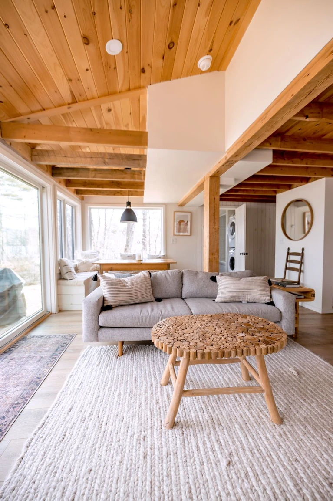

VOLVO展厅空间改造
VOLVO
SHOWROOM DESIGN
3D VISUALIZATION
SHOWROOM DESIGN
3D VISUALIZATION
VOLVO SHOWROOM RENOVATION展厅空间 · 三维视觉
展车进入观摩视线
从座席视角先看到车辆，再用俯视图读出座席与展车的位置关系。两个角度一起呈现改造后的观看空间。
到达之后，可以停留
接待区交代进入展厅时的第一眼，休息区则把画面转向坐下交流的尺度。

照片里木色顶面在靠窗处接上浅色立面，日光勾出转折。休息区成片也将木色面收在上方，把靠近座席的竖向界面留浅。
Andrea Davis · Pexels 许可从外场车列到室内单车
外场车列沿开阔地面排开。室内取出一辆车放在通高窗前，窗格和地面反光让视线集中在车身两侧。
PROJECT
沃尔沃展厅空间改造
BRAND
VOLVO
CATEGORY
SHOWROOM DESIGN
3D VISUALIZATION
3D VISUALIZATION